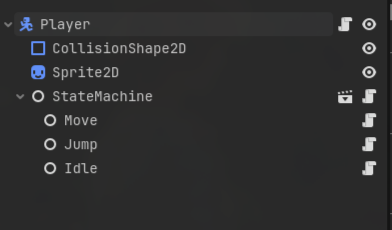

Motive
I've spent a chunk of the last few weeks down a State Machine rabbit hole in Godot, and figured I'd write up what I landed on. I read through a bunch of different takes on this (sources are linked at the bottom if you want to go down the same rabbit hole), stole the parts I liked from each, and mashed them together into what's below. So fair warning, this is my opinionated take, not the one true way to do it.
State Machines
A State Machine is just a pattern for managing state without it turning into a mess. You've got a set of states, transitions between them, and some logic that runs when you enter, exit, or move between states.
They're genuinely great for managing complex behavior. A few reasons why:
- Improved organization and maintainability
- States are decoupled from each other. To extend behavior, only the relevant state needs to be touched
- Transitions are explicit and easy to follow, which helps debugging
State Machines are best when an object only has a handful of distinct states it can be in.
If you've ever written a massive _physics_process with a ton of nested if-statements checking
whether the player is jumping, running, attacking, or stunned all at once, that's exactly what these fix.
Two Approaches
There are two main ways I've seen people do this in Godot: the Enum approach and the Node approach. Enum is simpler and works fine for small cases. Node is more powerful, but it comes with more overhead: more nodes in the scene tree, more setup, more jumping around when you're debugging. Honestly, if you're not reusing state logic or don't need each state fully encapsulated, Node is probably overkill. Start with Enum and only upgrade once you actually feel the pain.
Enum State Machine
To build the Enum version, define your states as an enum, track the current one in a variable, and use a
match block in _process to run whatever logic belongs to that frame.
A changeState() function handles the actual transition, fires a signal, and is where any
enter/exit logic goes.
Here's what that looks like:
This is great for simple cases: a door that's open or closed, a switch with a few modes, anything with maybe 2-5 states and nothing complicated happening per-state. It stays lightweight and easy to read while still giving you some structure. Once your states start needing their own helper functions, or you catch yourself copying transition logic across multiple objects, that's your sign to move to the Node approach.
extends Node
# simple enum state machine
# good for small, self-contained state logic
enum EnumState {
On,
Off
}
signal stateChanged(old, new)
var currentState
var prevState
func _ready() -> void:
currentState = EnumState.Off
func _process(delta: float) -> void:
match currentState:
EnumState.On:
pass # logic for being on
# handle_on_state(delta) <- optional helper functions to keep it clean
EnumState.Off:
pass # logic for being off
_:
pass
func changeState(newState: EnumState) -> void:
if currentState == newState:
return
# exit logic for the old state
match currentState:
EnumState.On:
pass # e.g. stop_effects()
EnumState.Off:
pass
prevState = currentState
currentState = newState
# enter logic for the new state
match currentState:
EnumState.On:
pass # e.g. start_effects()
EnumState.Off:
pass
stateChanged.emit(prevState, newState)Node State Machine
The Node approach gives each state its own script and its own node in the scene tree.
A central StateMachine node manages whatever the current state is, forwards
_process/_physics_process/input calls down to it, and handles transitions.
Every state ends up fully self-contained, which makes the whole thing a lot easier to extend later.
There are three moving pieces: the State base class, the StateMachine manager, and
the individual state scripts.
The player (or whatever you're managing) just owns the StateMachine as a child node and forwards
its process calls into it.
State Base Class
Each state extends the base class below, which just defines the interface: enter(),
exit(), and the three process methods, all empty and overridable.
The parent and machine references get set by the StateMachine during
setup, so any state can reach the character it's running on and trigger transitions whenever it needs to.
class_name State extends Node
var stateName: String = "BASE"
var parent: Node # set by the state machine on setup
var machine: StateMachine
func enter() -> void:
pass
func exit() -> void:
pass
# processInput is better for event-driven actions (button presses)
# movement-related input usually works better in processPhysics
func processInput(_event: InputEvent) -> void:
pass
func processPhysics(_delta: float) -> void:
pass
func processFrame(_delta: float) -> void:
passStateMachine
On setup, the StateMachine loops through its children, registers each one by name, and sets the
parent and machine references on all of them.
After that it just tracks the current state and routes process calls into it.
changeState() calls exit() on whatever the old state was and enter() on
the new one before actually swapping.
States get keyed by their stateName lowercased, and changeState() lowercases
whatever you pass in too, so casing in state scripts never bites you.
Using strings instead of typed node references keeps it flexible.
Any state can trigger a transition to any other state without needing a direct reference to it.
class_name StateMachine extends Node
signal stateChanged(old, new)
@export var initialState: State
@onready var states = {} # stateName (str) -> State
var prevState: State
var currentState: State
var parent: Node
func setup(parentNode: Node) -> void:
var childStates = get_children()
if len(childStates) == 0:
return
for state in childStates:
state.parent = parentNode
state.machine = self
var key = state.stateName.to_lower()
if states.has(key):
push_warning("StateMachine: duplicate state name '%s'" % key)
states[key] = state
changeState(initialState.stateName)
func processInput(event: InputEvent) -> void:
if currentState:
currentState.processInput(event)
func processPhysics(delta: float) -> void:
if currentState:
currentState.processPhysics(delta)
func processFrame(delta: float) -> void:
if currentState:
currentState.processFrame(delta)
func changeState(newStateName: String):
var key = newStateName.to_lower()
if key not in states:
return
var newState = states.get(key)
if !newState or newState == currentState:
return
if currentState:
currentState.exit()
prevState = currentState
currentState = newState
currentState.enter()
stateChanged.emit(prevState, newState)Player Example
The player script itself stays pretty simple.
It calls stateMachine.setup(self) in _ready() to hand itself over as the parent,
then just forwards its process callbacks into the machine.
All the real behavior lives in the state scripts.
One nice side effect of this setup is you can slot in logic before handing off to the state machine, things
like global cooldowns, checking for death, or anything else that should run no matter what state you're in.
class_name StatePlayer extends CharacterBody2D
@onready var stateMachine = $StateMachine
func _ready() -> void:
stateMachine.setup(self)
func _unhandled_input(event: InputEvent) -> void:
stateMachine.processInput(event)
func _physics_process(delta: float) -> void:
stateMachine.processPhysics(delta)
func _process(delta: float) -> void:
stateMachine.processFrame(delta)The Idle State
The idle state handles gravity while airborne, transitions into jump on a jump input, transitions
into move if there's horizontal input, and decelerates the player if none of that applies.
It reaches the player through parent and fires transitions through
machine.changeState().
extends State
func _ready():
stateName = "idle" # state names are internal FSM identifiers, not inspector-facing
func processPhysics(delta: float):
if not parent.is_on_floor():
parent.velocity += parent.get_gravity() * delta
if Input.is_action_just_pressed("ui_accept") and parent.is_on_floor():
machine.changeState("jump")
var direction = Input.get_axis("left", "right")
if direction != 0:
machine.changeState("move")
else:
parent.velocity.x = move_toward(parent.velocity.x, 0, 300.0)
parent.move_and_slide()
The jump and move states follow the same pattern, each one just handles its own input checks and fires its own
transitions.
The jump state sets velocity in enter() specifically so the jump only happens once, right when
you enter the state, instead of every single frame.
In the scene tree, the StateMachine node just has Idle, Move, and
Jump as children, each with their script attached.
Set the initialState export on StateMachine to the Idle node in the
inspector, and that's genuinely all the wiring you need.

Things to Watch Out For
The system above is clean, but there's a handful of gotchas worth knowing about before you go build on it.
-
If
initialStateisn't set in the inspector,setup()will crash the moment it tries to readinitialState.stateName. -
If two child nodes end up with the same
stateName, the second one silently overwrites the first and that state just vanishes. The setup code above throws apush_warning()so you at least get a heads up, but it's still easy to miss. -
Calling changeState() from inside enter() or exit() is asking for trouble.
It technically works, but you're swapping states mid-transition, and that can spiral into confusing behavior
or straight up infinite loops.
If you need to chain transitions,
call_deferred("changeState", ...)is the safer route. -
Need to block certain transitions under specific conditions? The cleanest place to do that is in the state's
processPhysics, right before callingmachine.changeState(). If the condition is more global, a guard check at the top ofchangeState()itself works too.
Sources
Here's what I actually used while putting this together. If this writeup didn't click for you, or you just want to go deeper, these are worth a watch.
- The Shaggy Dev - State Machines Playlist
- Bitlytic - Finite State Machines in Godot 4 in Under 10 Minutes
- Godotneers - State machines and state charts in Godot
- DevWorm - Simplest Way to Create a State Machine in Godot 4 (detailed tutorial)
Disagree with me?
If you think I'm wrong about any of this, tell me! I'm always looking to get better at this stuff, and I'd rather hear it than keep doing something wrong. Reach out through this form.